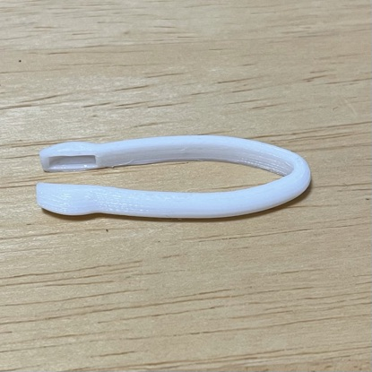
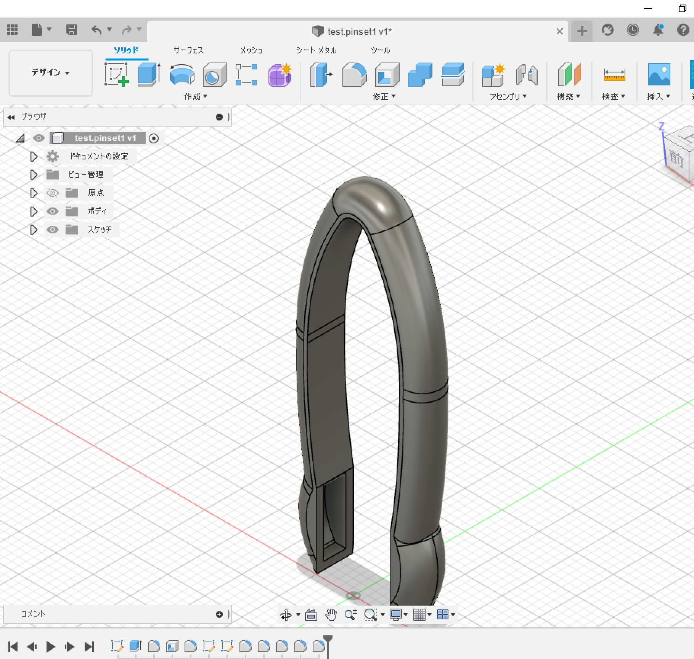
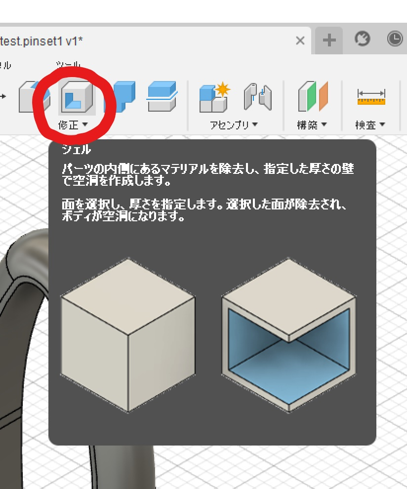
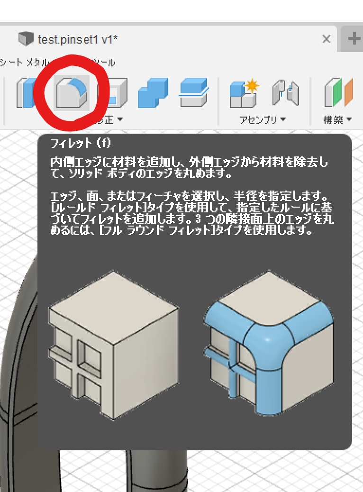
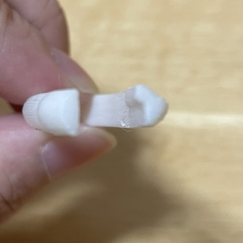
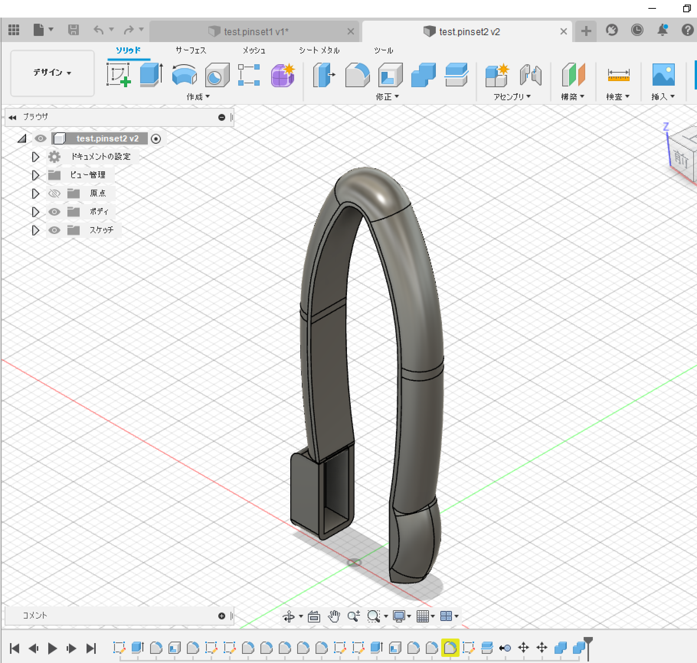
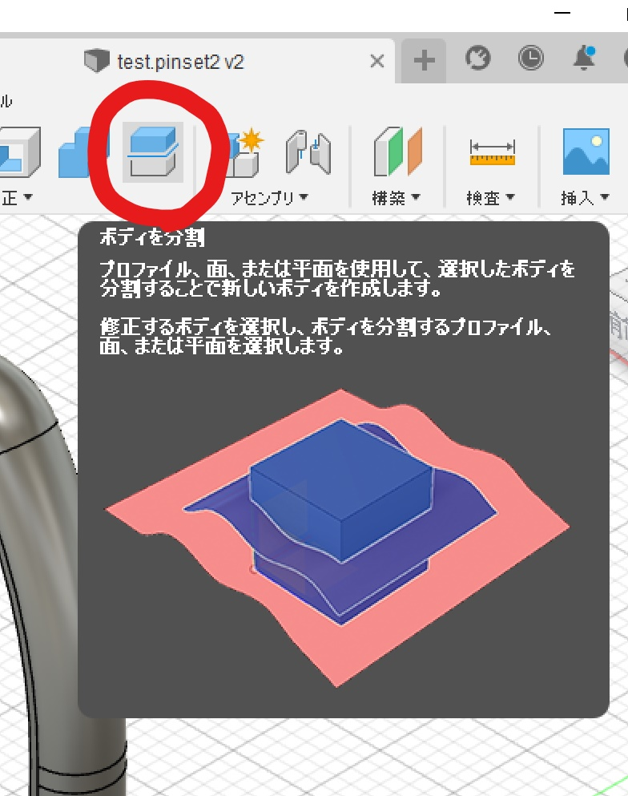
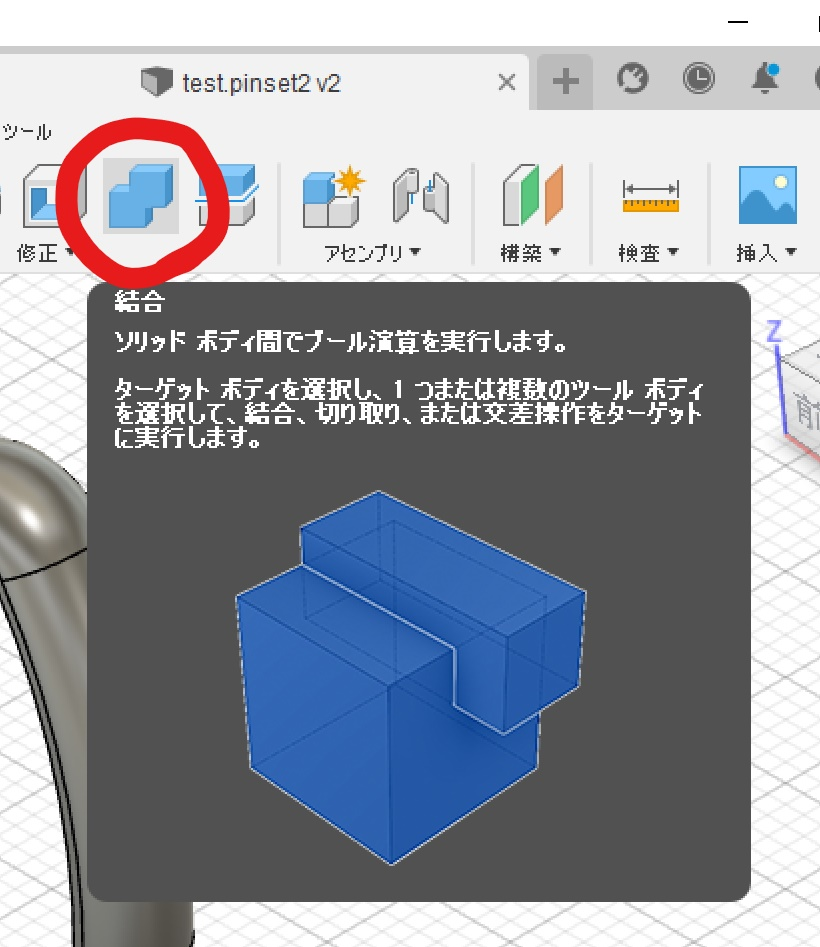

説明
先端の片方が匙状になっており、何かを掬いつつ、摘まむことのできるピンセットです。
コンセプトは計量スプーン＋ピンセット。
思い付きのプロセス
切っ掛けは調味料の「ひとつまみの量」とは一体どのくらいなんだ…？ということから。
ひとつまみの量…
既存の計量スプーン、カップでは量れない。個人の裁量に任される曖昧な量。
多分少々や適量と同じ類。加減が素人には分かりづらい。
他に「ひとつまみ」を量れそうなものとしてプラスチック製の先端が小さいスプーン上になっているものを考えたが、ひとつまみにしては小さすぎ、少なすぎるように感じた。
やはり「摘まむ」という行為が量るのに必要な動作なのでは…？
これらを踏まえ、考案したのが「ひとつまみ」のためのピンセット！
更にピンセットにすることで、直接調味料を触らずともひとつまみを量ることができる！
⇒個人的にはこのコロナ禍のご時世のニーズに沿っているのでは？と思っています…
試作品なので、実物の方はかなりサイズが小さくなってしまいましたが、先端を指の第一関節に合わせてリサイズし、再モデリングすることでよりひとつまみの量に近づけられると考えています。
また、今回はサイズ制限のために丸みを帯びさせて挟めるようにしたピンセットにしていますが、柄の部分を延ばし、スケッチ段階のような形にすることでより実用的になるかと思います。
２．作成メモ
ここではモデリング時に試したことや、成形してからの気づきなどのメモ書きをまとめた内容になります。
ver.1


ver.1のstlファイル
試したこと
スケッチ時、ミラーを利用し左右対称にした。
フィレットを利用し全体的に丸みを帯びさせた。
先端の片側にシェルを利用し匙型にくり抜いた。
- ミラー
左右線対称にできる。
大体は普通に片側に絵を描くように利用すれば良いが、後で曲線部分を修正する際や、フィレットを使うとき等対称ではなくなってしまうる時もあるので、様子を見ながらスケッチするのが良い。
- シェル

内側をくり抜くことが出来る。
外側の外殻となる部分の厚みの数値を設定できる。
(この際全体を見ながら数値を調節するのが良い。一側面から見て出来ていても他から見ると穴が空いてしまっていたりする。)
くり抜きたいボディを分割しておかないと、一体になっている部分が全てくり抜かれて空洞になってしまう。
- フィレット

丸みを帯びさせることができる。＝角を取ることができる。
どのくらい丸みを帯びさせたいか数値で設定できる。
元々の厚みなどの寸法を覚えておくと吉。(完全に丸くしてしまいたいときに寸法の半分の数値にすると上手くいく！)
問題点
- ボディを分割していなかった為、柄の部分まで空洞になってしまっていた。
- 匙型の先端とは反対側の平らにいなっているはずの先端が恐らくプリントミスで段差ができてしまっていた。

ver.2

stlファイルは冒頭に掲載したもの
試したこと
ボディを分割し、匙型になるべき部分と他に分け、匙型部分のみをシェルでくり抜いた。
その後結合を使い一体化させた。
- 分割

一つのボディを分けられる。
今回はスケッチにて分けたい部分に線を引き分割した。
- 結合

分割されたボディを一つにくっ付けられる。
座標をよく見ておかないとズレていたりするので注意。
改善後
- 前回のようなプリントミスは無くなった。(平らになった。)
- 匙型部分のみくり抜かれており、柄の部分は空洞ではなかった。